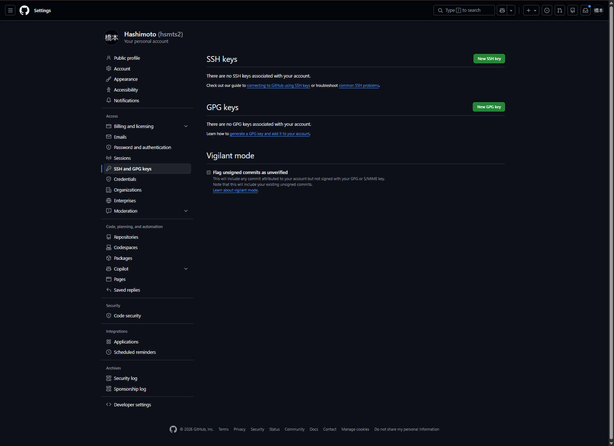
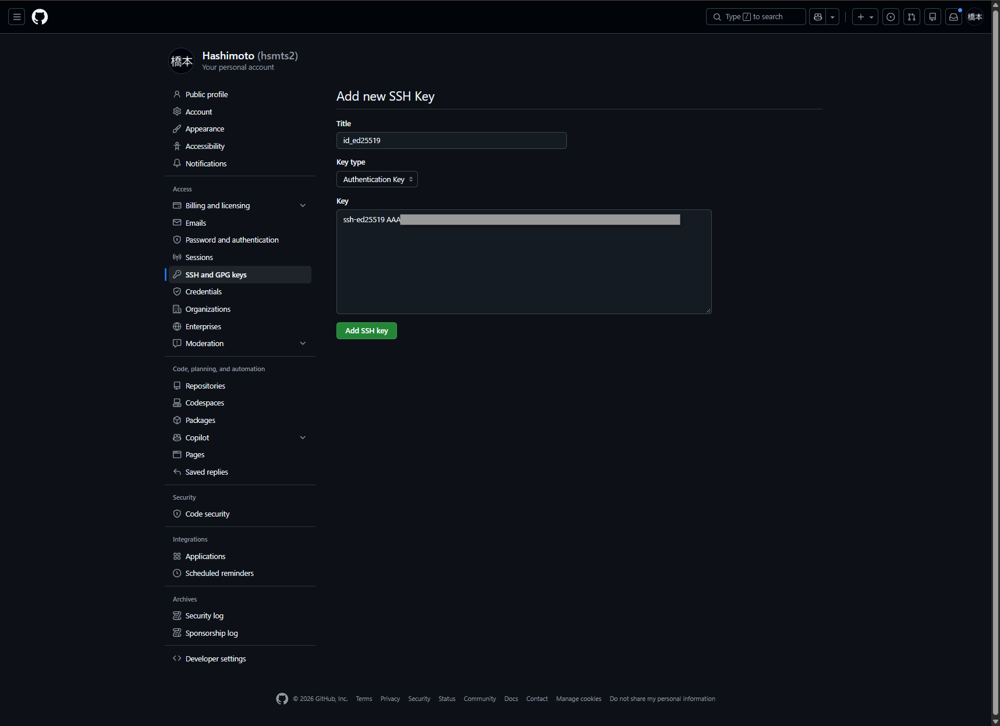
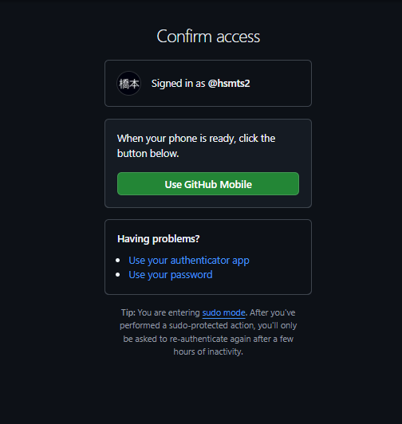
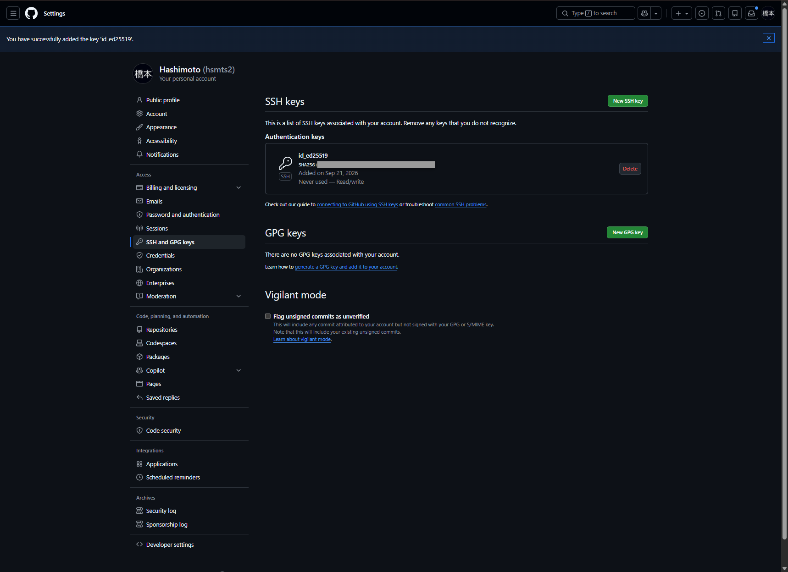
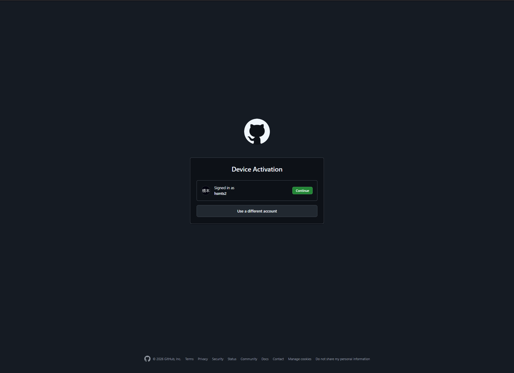
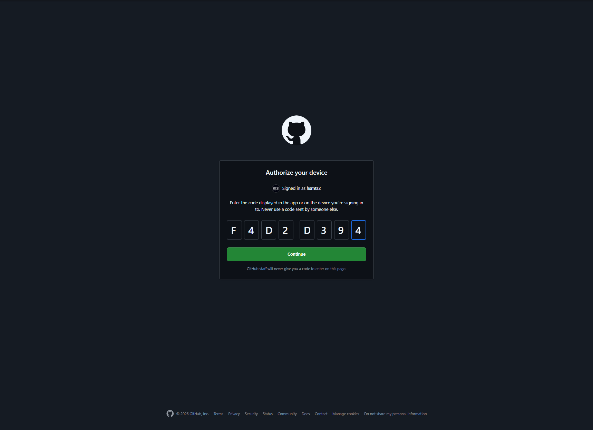
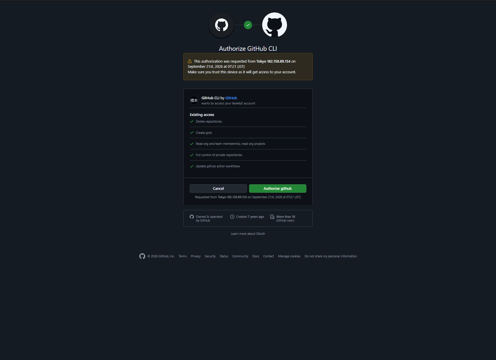
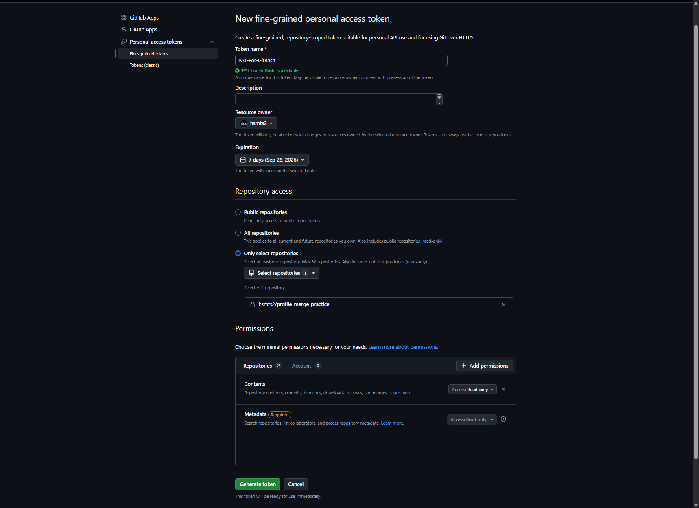
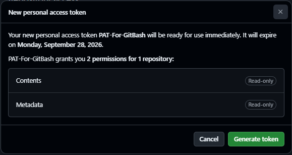
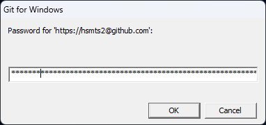

GitHub認証
次の3方式から利用する方法を1つ選んで実施。通常のPCでの対話操作には、PATを手動で発行・管理せずに済む②を推奨。会社の環境では指定された認証方式を優先
- ① 公開鍵認証：SSH鍵で認証
- ② HTTPS＋GitHub CLIのブラウザ認証：通常のPC利用に推奨
- ③ HTTPS＋PAT：対象リポジトリ・権限・有効期限を指定したトークンで認証
3方式すべての設定は不要。複数を設定した場合は、接続先URLと認証設定に応じて使い分け
① 公開鍵認証
1. SSH鍵の作成
1. 既存の鍵や設定ファイルを確認し、新しい鍵の保存名と重複しないことを確認
$ ls -la ~/.ssh2. Ed25519形式でGitHub用の鍵ペアを作成し、パスフレーズを2回入力（指紋とrandomartの出力は省略）
$ ssh-keygen -t ed25519 -C "github" -f ~/.ssh/id_ed25519_github
Generating public/private ed25519 key pair.
Enter passphrase for "/c/Users/hsmts/.ssh/id_ed25519_github" (empty for no passphrase):
Enter same passphrase again:
Your identification has been saved in /c/Users/hsmts/.ssh/id_ed25519_github
Your public key has been saved in /c/Users/hsmts/.ssh/id_ed25519_github.pub同名ファイルの上書き確認が出た場合は中断し、別名を選択。パスフレーズは秘密鍵を保護する文字列で、入力中は画面に非表示
| 指定 | 意味 |
|---|---|
| -t ed25519 | 鍵の種類をEd25519に指定 |
| -C "github" | 鍵を識別するコメント。大文字のCで、小文字の-cとは別のオプション |
| -f ~/.ssh/id_ed25519_github | 秘密鍵の保存先。公開鍵は同じ名前に.pubを付けて作成 |
公開鍵の書式は「ssh-ed25519 鍵本体 github」。末尾のgithubがコメントであり、GitHubのアカウント名や認証先を指定するものではない点に注意
3. 秘密鍵と公開鍵の2ファイルが作成されたことを確認
$ ls -l ~/.ssh/id_ed25519_github*
-rw-r--r-- 1 hsmts 197609 444 Sep 21 06:27 /c/Users/hsmts/.ssh/id_ed25519_github
-rw-r--r-- 1 hsmts 197609 88 Sep 21 06:27 /c/Users/hsmts/.ssh/id_ed25519_github.pub2. GitHubへ公開鍵を登録
設定画面：SSH and GPG keysを開く
1. 公開鍵をWindowsのクリップボードへコピー
$ clip.exe < ~/.ssh/id_ed25519_github.pub2. GitHubの個人設定でSettings → SSH and GPG keysを開き、New SSH keyボタンを押下

3. Titleに管理用の名前を入力し、Key typeでAuthentication Keyを選択。Keyへコピーした公開鍵を貼り付け、Add SSH keyボタンを押下

画像のTitleはid_ed25519だが、これはGitHub上の表示名。PC側のファイル名id_ed25519_githubと一致させる必要はなく、今回使用する鍵は新しく作成した公開鍵
4. Confirm accessが表示された場合は、Use GitHub Mobileボタンを押下し、携帯アプリで本人確認。別の方法を使う場合は画面の案内に従って操作

5. 追加成功のメッセージとAuthentication keysの登録を確認

画像のNever usedは接続テスト前の表示。公開鍵登録と、実際に秘密鍵を使った認証成功の確認は別の段階
3. SSH接続テスト
初回接続では相手が本物のGitHubかを確認するため、ホスト鍵の指紋を照合。鍵作成時に表示された自分の鍵の指紋とは別の値
GitHub公式のSSHホスト鍵指紋と一致した場合のみyesを入力。不一致やホスト鍵変更の警告が出た場合は接続を中断し、原因を確認
1. 作成した秘密鍵を指定してGitHubへ接続し、ホスト鍵を確認後、鍵のパスフレーズを入力
$ ssh -T -i ~/.ssh/id_ed25519_github -o IdentitiesOnly=yes git@github.com
The authenticity of host 'github.com (20.27.177.113)' can't be established.
ED25519 key fingerprint is: SHA256:+DiY3wvvV6TuJJhbpZisF/zLDA0zPMSvHdkr4UvCOqU
This key is not known by any other names.
Are you sure you want to continue connecting (yes/no/[fingerprint])? yes
Warning: Permanently added 'github.com' (ED25519) to the list of known hosts.
Enter passphrase for key '/c/Users/hsmts/.ssh/id_ed25519_github':
Hi hsmts2! You've successfully authenticated, but GitHub does not provide shell access.| 指定 | 意味 |
|---|---|
| -T | 疑似端末を割り当てずに接続 |
| -i | 使用する秘密鍵ファイルの指定（.pubではない） |
| -o IdentitiesOnly=yes | 明示・設定された鍵を使い、エージェント内の無関係な鍵の提示を抑制 |
| git@github.com | 接続先。SSHユーザー名は自分のアカウント名ではなくgit |
Hi hsmts2!が今回の認証先アカウント。successfully authenticatedは認証成功を示し、shell accessの案内は失敗ではなくGitHubが対話シェルを提供しないという意味。成功時も終了コードは1となる仕様
known_hostsにはGitHub側のホスト鍵が保存され、通常は次回以降の同じ確認が不要。接続先IPや表示内容は環境によって変化
4. 認証成功とGitの接続方式
ここまでで完了したのは、鍵の作成・公開鍵登録・指定した鍵でのSSH認証。既存リポジトリのHTTPS接続をSSHへ切り替えたり、pushしたりする操作は未実施
HTTPSのremote URLは、公開鍵を登録しただけでは変更なし。今後SSHでcloneやpushを行う場合はSSH形式のURLと、この専用鍵を使用するための設定が別途必要。既存のSSH設定や鍵は変更せず保持
② HTTPS＋GitHub CLIのブラウザ認証
SSH鍵を使う方法とは別に、ブラウザでGitHub CLIを認可する方法。GitHub CLIをインストール済みのWindows環境で実施。SSH鍵の削除や事前ログアウトは不要で、リポジトリ外のホームフォルダからも実行可能
1. ブラウザ認証の開始
1. 接続先をgithub.com、Gitの接続方式をHTTPSに指定し、ブラウザ認証を開始
$ gh auth login --hostname github.com --git-protocol https --web
! First copy your one-time code: F4D2-D394
Press Enter to open https://github.com/login/device in your browser...表示された一時コードを控え、Enterキーを押してブラウザを開く操作。掲載コードは使用済みの実行記録で、再利用不可。実際には自分が開始したコマンドに表示されるコードのみ使用し、他人から送られたコードは入力しないこと
2. アカウント・コード・権限の確認
1. Device Activationで対象がhsmts2であることを確認し、Continueボタンを押下。別のアカウントの場合はUse a different accountボタンを押下

2. Authorize your deviceの入力欄へ、Git Bashに表示された一時コードを入力。携帯アプリの通知を待つ操作ではない点に注意
3. コードを入力後、Continueボタンを押下

4. Authorize GitHub CLIで、自分が開始した要求・アカウント・アクセス権限を確認し、Authorize githubボタンを押下

画像のExisting accessはこのアカウントでの既存権限を含む表示で、すべてが今回新しく追加された権限とは限らない点に注意。会社の環境では指定されたアカウント・アプリ・権限方針に従うこと
3. 認証完了とアカウント確認
1. Git Bashへ戻り、先ほどのgh auth loginが認証成功で終了したことを確認（同じコマンドの続きの出力）
✓ Authentication complete.
- gh config set -h github.com git_protocol https
✓ Configured git protocol
✓ Logged in as hsmts2
! You were already logged in to this accountalready logged inは以前から同じアカウントでログイン済みという案内で、エラーではない表示
2. 現在の認証情報でGitHub APIへ問い合わせ、実際のアカウント名を確認
$ gh api user --jq .login
hsmts2今回確認できたのはGitHub CLIのブラウザ認証とhsmts2へのAPIアクセス。リモートの登録・URL変更・pushはこの手順では未実施。--git-protocol httpsは既存リポジトリのremote URLを書き換える指定ではない点に注意
補足：新しいPCでGitからも認証情報を使う場合
1. GitHub CLIをGitの認証ヘルパーとして設定するコマンド例（今回の実行ログには含まれない操作）
$ gh auth setup-git --hostname github.com2. 保存されたログイン状態を確認するコマンド例。gitではなくghのサブコマンドで、トークンを表示する--show-tokenは指定不要
$ gh auth status③ HTTPS＋PAT
Fine-grained PATを使用し、非公開リポジトリprofile-merge-practiceへの読み取りを確認
1. PATの作成
1. Fine-grained personal access tokensの設定画面を開く。Generate new tokenボタンを押下
2. トークン名・有効期限・対象リポジトリを設定し、Add permissionsから読み取り権限を追加
| 項目 | 設定値 |
|---|---|
Token name | PAT-For-GitBash |
Resource owner | hsmts2 |
Expiration | 7 days（今回の期限は2026年9月28日） |
Repository access | Only select repositories |
| 対象リポジトリ | hsmts2/profile-merge-practice |
Contents | Read-only |
Metadata | Read-only（必須として自動追加） |

3. Generate tokenボタンを押下し、確認画面で期限・対象数・権限を確認後、再度Generate tokenボタンを押下

4. 発行されたPATをコピーし、次のパスワード入力欄で使用。PAT本体は掲載せず、コマンドやURLにも埋め込まないこと
2. PATで接続を確認
1. 今回のコマンドに限り認証ヘルパーを無効にし、対象リポジトリの参照情報を取得
$ git -c credential.helper= -c credential.https://github.com.helper= ls-remote https://hsmts2@github.com/hsmts2/profile-merge-practice.git
38ec6222e0c119bf4c2fbc97f97177cb5468a541 HEAD
cd8dc1cd581365deeb4bd16e319203abae4c5fc5 refs/heads/feature/update-profile
38ec6222e0c119bf4c2fbc97f97177cb5468a541 refs/heads/main実行途中に次の入力画面が表示されたら、GitHubのログインパスワードではなくPATを貼り付け、OKボタンを押下。上記は入力後に取得できた出力

HEADと2つのブランチのコミットIDを取得でき、読み取り成功を確認。今回は読み取り専用のためpush権限はなく、ファイルの変更・clone・pushは未実施
このgit ls-remoteが設定後の接続テストに相当。非公開リポジトリの参照情報をPATで取得できたため、今回の読み取り確認は完了
ホームフォルダなど接続先の設定がない場所では、git ls-remoteだけでは接続先不明のエラー。上記のURL付きコマンド全体を実行すること。PATの発行や認証は、ローカルリポジトリへのリモート登録とは別の操作
出力の40桁の文字列はコミットIDで、PATや秘密鍵ではないため全文掲載可能。ただし、非公開案件ではブランチ名や履歴の識別情報も公開可否の確認対象
-cによる設定はこの実行だけに適用され、保存済みのGitHub CLI認証やSSH鍵の変更はなし